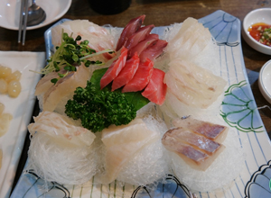
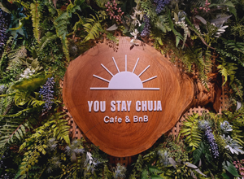
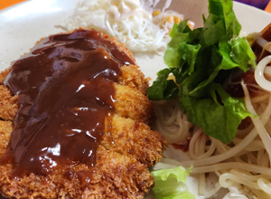
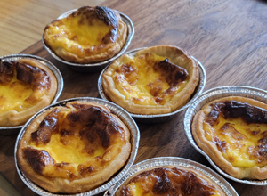
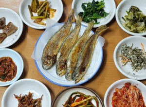

CHUJA
추자도

- 한식
- 오동여식당
- 삼치회, 생선모듬구이정식 등
- #추자도 #상추자도 #자연산회 #삼치회
- ★ 4.1(40명) ㅣ♡ 350
- 한식
- 고향향토장터
- 문어숙회, 문어탕탕이, 한치물회 등
- #추자도 #하추자도 #낙지탕탕이 #멜튀김
- ★ 4.5(42명) ㅣ♡ 450

- 카페 / 민박
- 유스테이추자 카페&민박
- 눈꽃빙수, 대추차, 프렌치롤 등
- #하추자도 #커피맛집 #뷰맛집 #친절한
- ★ 4.4(60명) ㅣ♡ 80

- 분식
- 김밥옆구리
- 야채김밥, 김치김밥, 오므라이스 등
- #상추자도 #분식맛집 #올레길근처
- ★ 4.5(35명) ㅣ♡ 400

- 한식
- 유가네한우곰탕
- 소머리국밥, 순대국, 얼큰순대국 등
- #상추자도 #국밥맛집 #꿀맛김치 #청결한
- ★ 4.8(90명) ㅣ♡ 350
- 한식
- 오누이밥상
- 굴비정식, 정식백반, 오삼불고기 등
- #상추자도 #추자정식 #가성비갑 #밥도둑
- ★ 4.9(58명) ㅣ♡ 600

- 디저트
- 뚊카페
- 아메리카노, 카페라떼, 에그타르트 등
- #상추자도 #베이커리 #추자유일로스팅카페
- ★ 4.1(38명) ㅣ♡ 520

- 한식
- 시골밥상
- 거북손잔치국수, 굴비구이정식 등
- #상추자도 #자연산 #거북손맛집 #파김치맛집
- ★ 4.5(48명) ㅣ♡ 510